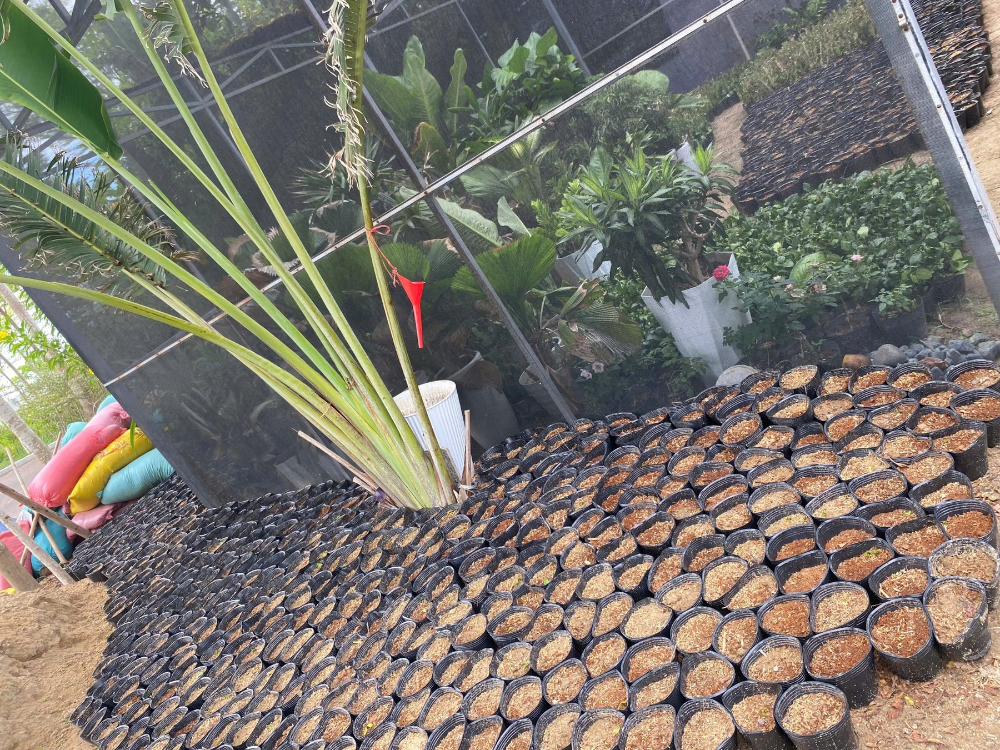
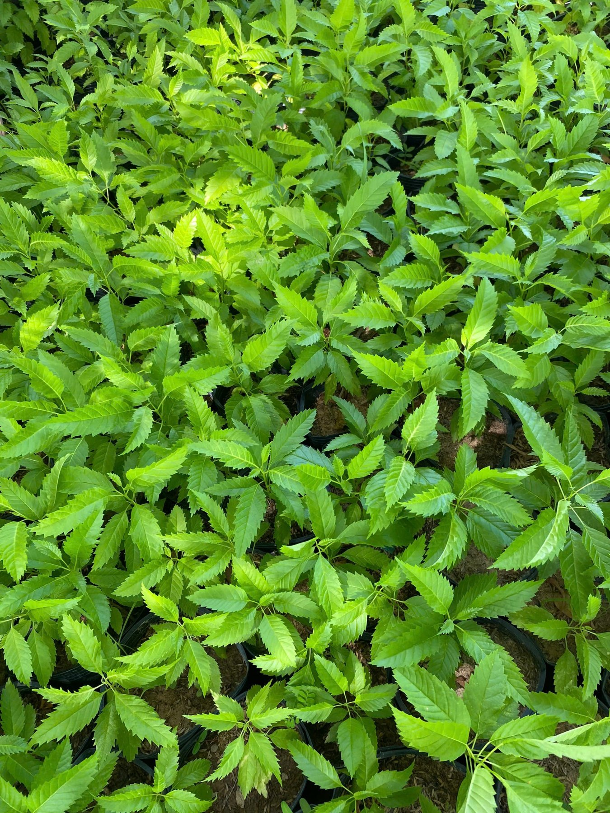
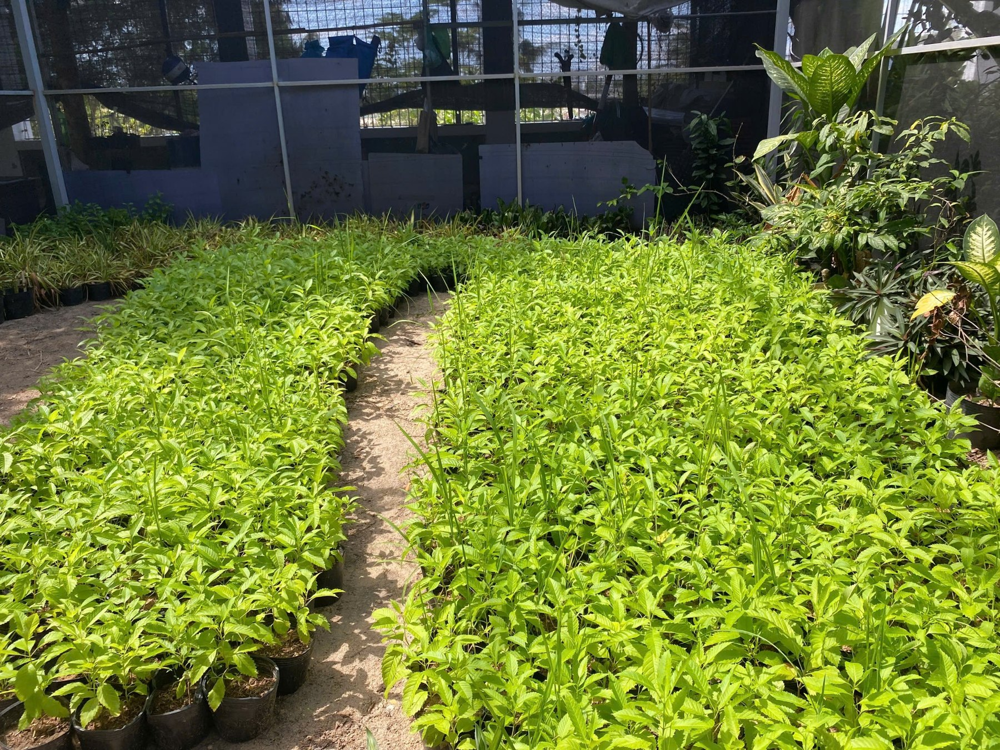
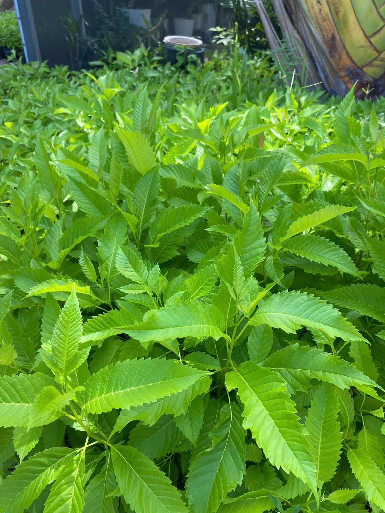
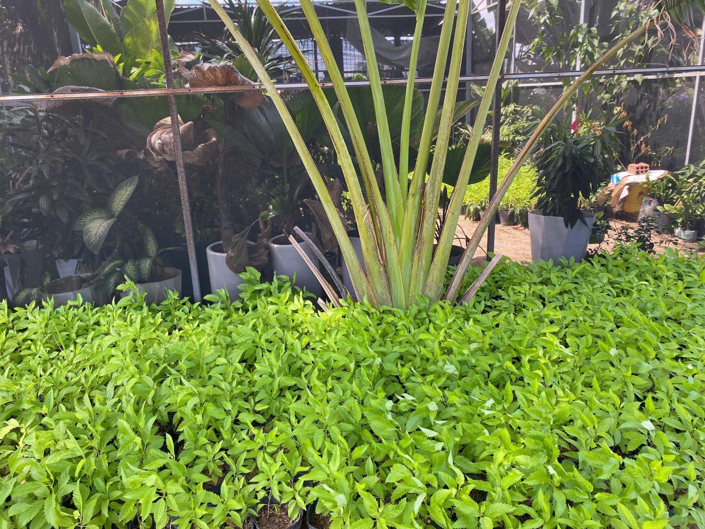
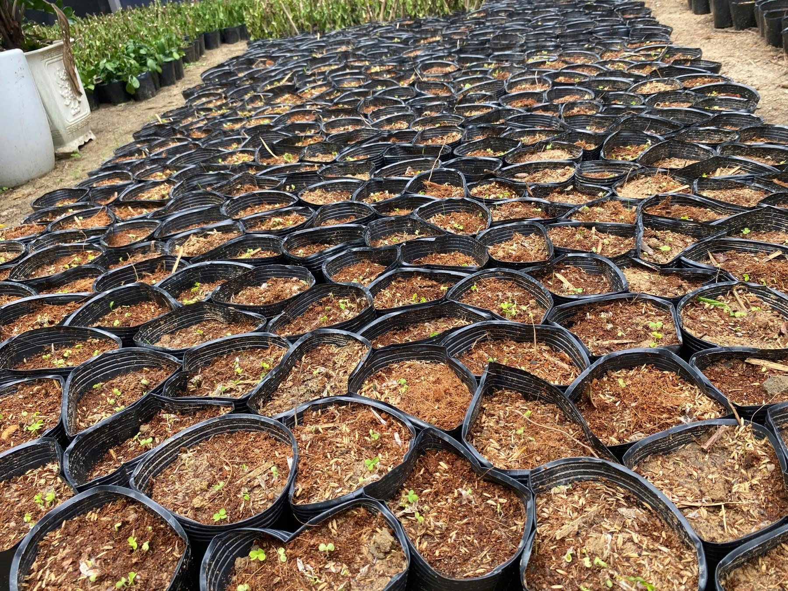
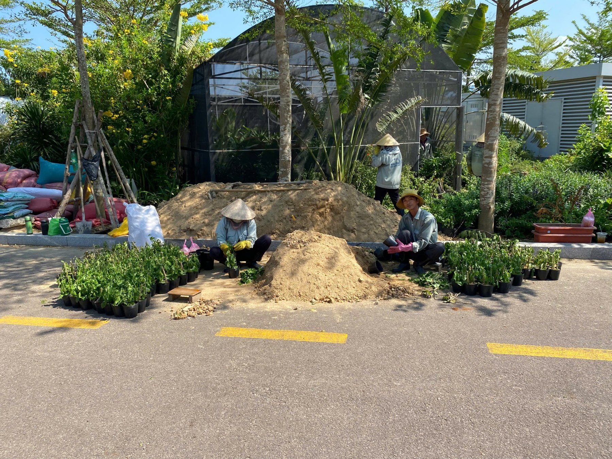

Chất lượng hạt giống
Hạt thu hái cần được lựa chọn từ nguồn cây mẹ khỏe, phù hợp và đúng thời điểm.
Từ nguồn hạt tự thu hái trong khuôn viên Campus đến lô cây giống cao khoảng 30 cm — một quy trình thực tế hướng đến chủ động nguồn cây, chất lượng và tiến độ cho công tác cảnh quan.

Trong công tác vận hành cảnh quan, nguồn cây giống ổn định giúp chủ động hơn về chất lượng, tiến độ và kế hoạch trồng bổ sung. Từ nguồn hạt hoàng yến được thu hái trực tiếp tại FPT AI Campus, lô cây giống khoảng 3.000 bầu được triển khai nhằm phục vụ các hạng mục cảnh quan trong khuôn viên.
Giai đoạn đầu tập trung vào chuẩn bị vật liệu, phối trộn giá thể và đóng bầu đồng loạt. Giá thể sử dụng gồm đất cát, tro trấu, xơ dừa và phân bón vi sinh, hướng đến sự cân bằng giữa độ thông thoáng, khả năng giữ ẩm và dinh dưỡng ban đầu.

Hạt giống được thu hái từ cây hoàng yến tại Campus và gieo vào từng bầu. Các bầu được sắp xếp sát nhau thành từng khu rõ ràng, giúp kiểm soát độ ẩm, theo dõi nảy mầm và chăm sóc đồng đều.

Sau khoảng 5–7 ngày, cây bắt đầu nảy mầm. Ở giai đoạn này, việc duy trì độ ẩm ổn định và kiểm tra hằng ngày có ý nghĩa quan trọng, bởi cây con còn nhạy cảm và sự chênh lệch điều kiện chăm sóc dễ dẫn đến phát triển không đồng đều.

Sau giai đoạn nảy mầm, cây phát triển thân và lá nhanh. Hình ảnh ghi nhận cho thấy tán lá xanh, mật độ cây khá đồng đều và khu vực ươm được tổ chức thành luống có lối đi phục vụ tưới, làm cỏ và kiểm tra định kỳ.



Hạt thu hái cần được lựa chọn từ nguồn cây mẹ khỏe, phù hợp và đúng thời điểm.
Giá thể phải cân bằng giữa giữ ẩm, thoát nước và dinh dưỡng cho cây con.
Bầu cây cần được bố trí khoa học để việc tưới, kiểm tra và chăm sóc thuận tiện.
Giai đoạn đầu cần duy trì điều kiện ổn định giữa các khu vực và các bầu.
Kiểm tra định kỳ giúp phát hiện sớm cây phát triển chậm hoặc không đồng đều.
Lô cây sẽ tiếp tục được chăm sóc, phân loại và theo dõi cho đến khi đạt tiêu chuẩn đưa ra hiện trường. Quá trình trồng, thích nghi và sinh trưởng sau khi sử dụng sẽ tiếp tục được ghi nhận nhằm hoàn thiện quy trình nhân giống cho các đợt tiếp theo.